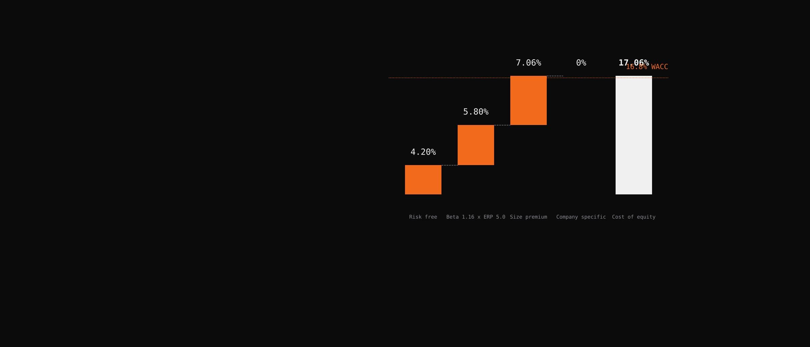
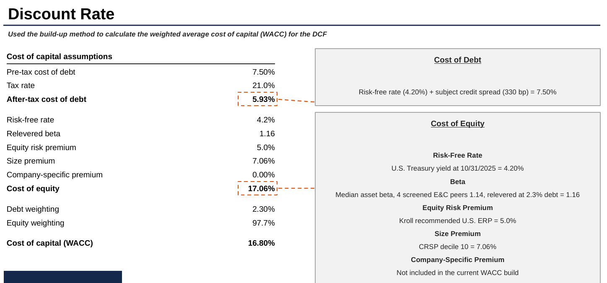

Valuing 100 percent of a $132MM revenue Gulf Coast engineering contractor, an owner operated S corporation, for an ESOP acquisition at fair market value. I owned the discount rate, the DCF, the LBO and the public comparables.
The competition
A 25 minute recorded valuation, no questions allowed
Run out of Georgia State University. Round 1 is a recorded presentation of up to 25 minutes with no live questions; the top five teams go to the in person final. We submitted on October 19, 2026.
With no question period, every judgment has to defend itself inside the video. Each of my four slides answers the question a judge would ask if they could.
My four slides
Risk, value, a buyer's check, and what public peers can and cannot tell you
- Discount rate. What return does a buyer need to own this risk? I built the cost of capital in layers and landed at 16.8 percent.
- Discounted cash flow. What are the cash flows worth at that rate? A five year forecast to 2031, tested two ways, growing forever at 2 to 3 percent or selling at 4.5 to 5.5 times EBITDA. The two methods landed within half a million dollars of each other.
- Leveraged buyout. Could a real buyer pay that? I modeled a private equity purchase at 2.5 times EBITDA of debt, kept low because a bonded contractor cannot carry heavy leverage, and solved for the most a fund could pay at its target return. It landed close to the DCF, so the LBO became a floor and a check, with zero weight in the conclusion.
- Guideline public companies. What do public peers tell you? Their risk, not their price. I used the peer set for beta only. Companies worth $4.7 billion to $16.8 billion with hundreds of projects and liquid stock say little about a control sale of a private contractor with two owners, so their multiples carried zero weight.
The discount rate build
Six inputs and one big judgment
Risk free rate, the Treasury yield on the October 31, 2025 valuation date.
Beta. Eleven public engineering and construction companies screened down to the four with clean five year data, median unlevered beta 1.14, relevered for the company's small debt.
Equity risk premium, the Kroll recommended figure on the valuation date.
Size premium, Kroll microcap decile. The single biggest judgment in the build. Without it the value would nearly double.
Company specific premium. The named risks were priced into the forecast instead, by cutting management's growth. Adding a premium too would count the same risk twice.
Weighted average cost of capital, 97.7 percent equity at 17.06 percent and 2.3 percent debt at 5.93 percent after tax.

The slide as submittedMy discount rate page from the deck. The company, its figures and the conclusion stay off this site.

The 7.06 percent size premium is worth about five turns of EBITDA. Without it the implied multiple goes from about 5 times to about 10, which is the whole gap between where public peers trade and where private contractors this size sell. That is why the public multiples got zero weight.
Where I disagreed with management
Growth, not margins
Management grew revenue 6.5 to 7.5 percent a year. The company had missed its own 2025 budget by 14 percent and new orders had been flat for two years. I accepted 2026 because backlog supported it, then faded growth to 2.5 percent by 2031. Every dollar between our value and management's case is that growth call, not margins. The DCF runs on a 6.5 percent mid cycle margin, a normal year rather than a good or bad one.
What I would do differently
Three things the judges could have pushed on
- Four betas is thin. Four clean betas beat eleven noisy ones, but every reasonable change to the beta still kept the value inside our range, and I should have shown that range on the slide.
- The 10 year or the 20 year Treasury. Kroll pairs its 5 percent premium with the 20 year yield, which was 4.65 percent. Using it would have raised the WACC to about 17.2 percent and cut the value by about $1.4 million, still inside the range. I used 4.2 percent and should have footnoted the choice.
- Bonding caps leverage harder than I modeled. At 2.5 times EBITDA the contractor's tangible net worth goes negative, which a surety would not accept. A 1.5 times case changes the LBO ceiling by a few million and does not change the conclusion, but it is the more honest number.
Process
Three mock presentations and a content freeze
Three mocks between September 18 and early October, a content freeze on October 9, recording on October 10 and 11. My segment ran six minutes fifty in the second mock against a target of four and a half, so the last two weeks were cutting words, not adding analysis.
The company and the data room are confidential, so the dollar figures stay off this page. The method and the judgment calls are mine.